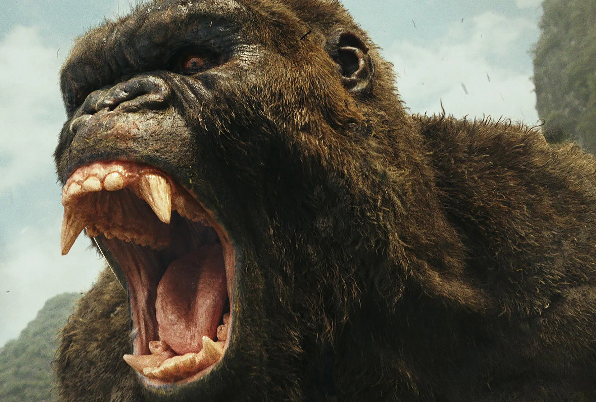

Información del Personaje
Origen: Isla Calavera (Oceano Indico)
Altura: 31.7 metros
Peso: 60 toneladas
Alianza: Aliado (Por el momento)
Historia
King Kong, una de las entidades kaiju más imponentes registradas por la WKDF, es reconocido como el protector natural de Isla Calavera. Su tamaño y fuerza superan a la de cualquier primate conocido, y su inteligencia ha sido comparada con la de los seres humanos, lo que le permite desarrollar estrategias de combate y utilizar herramientas rudimentarias.
La WKDF ha determinado que Kong no representa una amenaza inmediata para la humanidad, siempre y cuando se respeten sus territorios y no se le provoque. En diversas ocasiones, ha servido como una fuerza de contención contra kaijus hostiles, lo que ha motivado a ciertos sectores de la WKDF a considerarlo un aliado clave. Sin embargo, su imprevisibilidad y su feroz protección de Isla Calavera lo convierten en un sujeto de monitoreo constante.
Históricamente, Kong ha desempeñado un papel crucial en el equilibrio ecológico de su isla natal, manteniendo a raya amenazas como los Skullcrawlers y otros depredadores titánicos. Sin embargo, su interacción con la humanidad ha resultado en varios incidentes catastróficos, incluyendo la famosa expedición de 1933 a Nueva York. Durante este evento, Kong fue capturado y llevado a la ciudad como una atracción, pero escapó y causó una destrucción significativa antes de ser abatido en la cima del Empire State Building. Se considera que esta tragedia fue producto de la explotación del primate por parte de empresarios irresponsables, y sirvió como advertencia sobre los peligros de intervenir en su hábitat natural, se creyo en ese momento Kong murio pero al dia siguiente cuando el gobierno va recoger su cadaver, su cuerpo misteriosamente desaparecio, dando la pista de que escapo y nado de regreso a la Isla Calavera donde seria encontrado muchos años despues; todavia nadie en la WKDF sabe como ocurrio esto pero solo muestra lo impresionante que es el simio.
Protocolos de Interacción
1.No invadir Isla Calavera sin autorización: Cualquier expedición debe contar con aprobación de alto nivel.
2.Evitar provocaciones innecesarias: Kong ha demostrado reacciones hostiles ante amenazas percibidas.
3.Evaluar posibles alianzas: En situaciones de crisis, Kong podría ser una pieza clave en la defensa contra amenazas mayores.
4.Mantener un plan de contingencia: A pesar de su aparente neutralidad, Kong sigue siendo un ser de gran poder destructivo.
Imagen del Sujeto
Habilidades
Fuerza sobrehumana
King Kong muestra una fuerza física inmensa. Puede luchar cuerpo a cuerpo con varias criaturas gigantes, como dinosaurios y serpientes gigantes, y salir victorioso.
También ha demostrado ser capaz de destruir grandes estructuras hechas por el hombre, como el muro que rodea la aldea de la Isla Calavera, y de dominar a otras criaturas que viven en la Isla Calavera, como el Carnívoro, el Elasmosaurus y el Pteranodon. Incluso logra liberarse de cadenas de acero cromado que se creia que eran irrompibles.
Agilidad
Kong exhibe una agilidad impresionante, ya que puede saltar grandes distancias (como los 250 metros entre las Torres Gemelas del World Trade Center) y aterrizar de pie.
Se le vio saltando sobre un helicóptero UH-1 y escalando los enormes acantilados de la Isla Calavera. También logró saltar de un contenedor de carga a un destructor y luego a un portaaviones, se balanceó en las tuberías en la entrada de la Tierra Hueca y esquivó el aliento atómico de Godzilla en varias ocasiones.
Inteligencia
Kong también es notablemente inteligente. Utiliza objetos del entorno, como árboles o rocas, cuando lucha, e incluso cuando se ve superado por oponentes más poderosos o más numerosos, puede pensar con rapidez y encontrar una forma de ganar. Algunas encarnaciones de Kong incluso son capaces de comunicarse con personas mediante lenguaje de señas, incluso se ha visto que uso un arbol como un arma durante su arma contra Godzilla.
Videos de Metraje Encontrado
Video de Evidencia 1: El ataque de Kong en Nueva York en 1933
Video de Evidencia 2: Combate en el oceano entre Kong y Godzilla
Video de Evidencia 3: Kong contra un calamar gigante
Video de Evidencia 4: Kong crea una poderosa hacha de las escamas de un kaiju caido